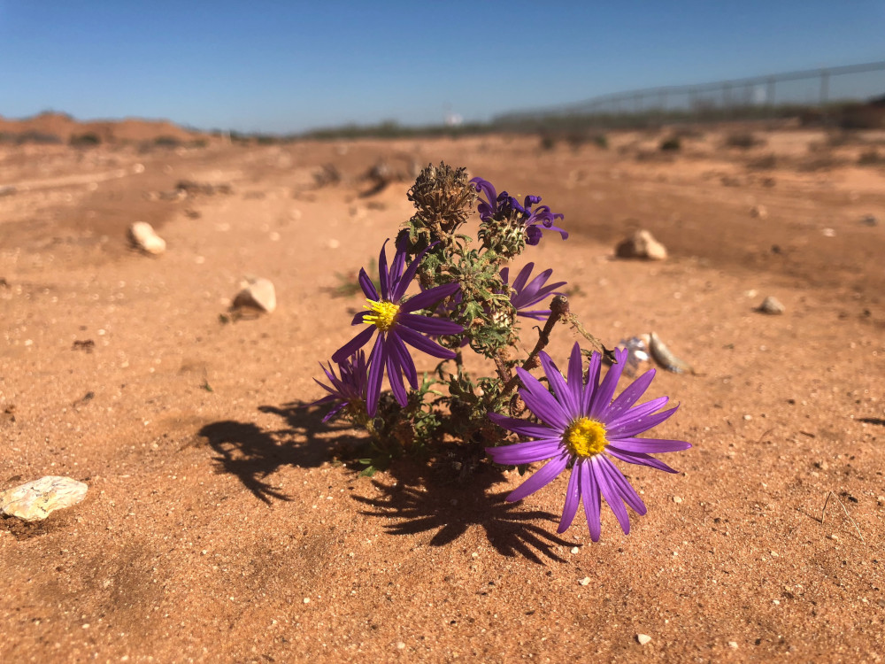
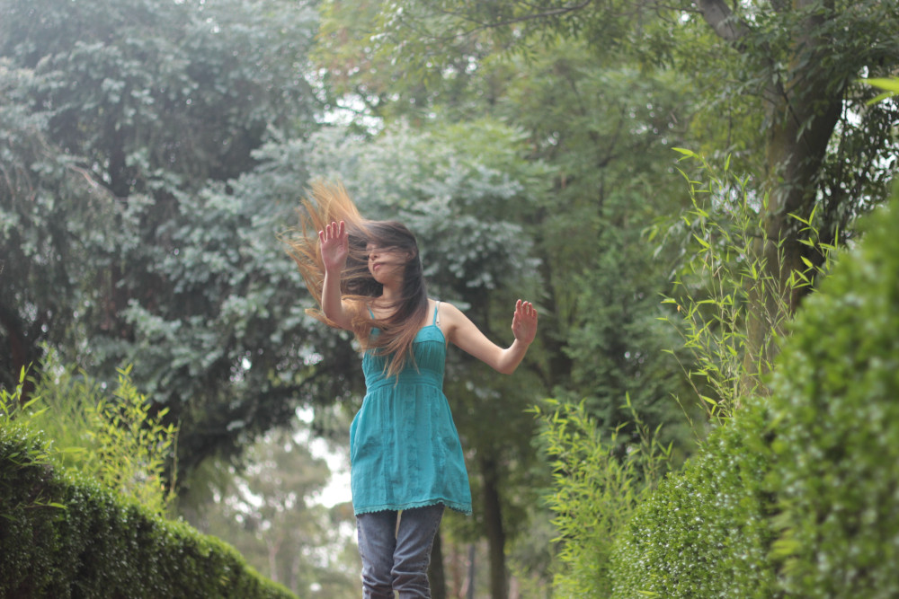

Розмови про стрес: контролювати, використати, зміцнішати!

Photo by Delfino Barboza on Unsplash
Що ж таке стрес і що спільного між конфліктом між людьми та паростком жита, на який діє токсична речовина?
По-перше, важливо ще раз нагадати, що стрес – це про реакцію на несприятливий фактор, а не власне цей фактор. І саме цей ключовий аспект дає нам неймовірні можливості та поле для дій, про що поговоримо трохи згодом. Неймовірно цікавим є те, що у відповідь практично на будь-який небажаний зовнішній вплив – будь-то стрес внаслідок конфлікту в соцмережах, харчове отруєння, чи вплив засухи на пшеницю, у наших таких далеких в еволюційному плані клітинах – на мікрорівні нерідко відбуваються дещо схожі процеси.
"Коли я тільки починала працювати із стресорами на рослинах, я була просто в захопленні від того, що, в рослин існують універсальнімеханізми захисту від стресу, які нерідко є просто таки суперпотужними! А, з іншого боку, рослини можутьдуже по-різному відповідати на один і той же стресор. І неадекватна реакція рослини на стрес, як то кажуть, коштує їй життя. У наших дослідженнях із гербіцидами (речовинами, які застосовують для контролю бур'янів на полях) ми постійно спостерігаємо, як на одні рослини ці речовини особливо не діють, а в інших рослинах при дії гербіцидів запускається програма самознищення. Так би мовити, рослини самі собі роблять харакірі."
"Одним із універсальних механізмів захисту від стресу є, наприклад, активація ферменту глутатіонтрансферази. Цей фермент залучений у процеси знешкодження різних токсичних речовин, що потрапляють у рослину. Та й далеко не лише у рослину! Глутатіонтрансфераза знайдена у різних груп живих організмів – бактерій, грибів, рослин, гельмінтів, комах, ссавців. У людини чимало цього ферменту в печінці, яка, як відомо, виконує роль своєрідного фільтру та не на словах – детокс-функцію в нашому організмі."
Про анатомію стресу
Ще в 20-х рр. минулого століття фізіолог Уолтер Кенон відзначив, що у відповідь на будь-який подразник організм готується <<бити або втікати>>. Звідси і відома фраза <<Бий або втікай!>> як дві можливі реакції на стрес. Бити – змінити реальність, пристосуватися (адаптуватися), а втікати – втекти від загрози (це для тих, хто вміє бігати – але не для рослин точно – Марія сміється). Десятиліття потому Ганс Сель'є назвав цю універсальну реакцію стресом (Selye, 1936).
Стрес починається з фази реакції. Якщо сила стресу не досягає деяких порогових значень, то приходить фаза адаптації, а за нею і фаза відновлення. У разі ж посилення сили стресу до летальних значень приходить фаза пошкодження і загибелі(Генкель, 1978).
Про радощі та жалі адаптацій
Адаптація, або ж пристосування (лат. <
**"*У своїй роботі я, наприклад, спостерігаю це у рослин, які набувають стійкості до дії гербіцидів в умовах посухи"***
Далі Марія додає, що"ці дослідження також надихають і на**власні пошуки та роздуми щодо ефектів різних стресів на наше тіло і розум"
Photo by Larm Rmah on Unsplash
І адаптація, і кросадаптація мають загальнобіологічне значення, адже різні види стресу є постійними супутниками існування всіх живих організмів та рушіями еволюційних процесів, де виживають найсильніші та найадаптованіші.
І хоч з точки зору еволюції і біології, кросадаптації це вишуканий і потужний інструмент, іноді він грає проти нас – як наприклад, виникнення антибіотикостійкості у бактерій чи стійкості бур'янів до гербіцидів. Якщо одні й ті самі стресори діють надто часто і надто довго, а особливо, коли їх дія доволі помірна – то окрім тимчасових метаболічних змін, відбуваються зміни і на генетичному рівні – виникає резистентність. Сьогодні це проблема і в медицині, і в агросекторі – виникнення резистентних і навітьполірезистентних (стійких до кількох антибіотиків чи гербіцидів) бактерій і бур'янів, відповідно.
Як використати це для себе?
Стресостійкість – то не лише бажаний пункт резюме для багатьох роботодавців, а й скіл, який можна до певної міри розвивати.
Це можливо як на фізіологічному так і психологічному рівні. Чудернацьке слово "гормезис" сьогодні вже нерідко зустрічається не лише на наукових конференціях, а й навіть в дописах просунутих інстаграм-блогерів. По суті це така собі "користь із маленької шкоди" – стимулююча дія невеликих доз стресових факторів. І тут по суті можна навести тьму прикладів – холодний душ чи сауна, спорт і навіть вакцинація.
"Мені самій дуже імпонує обливання холодною водою, яке в гострій фазі (під час тремтіння) супроводжується викидом гормонів стресукортизолута норадреналіну, але в подальшому призводить до зміцнення імунної системи та зменшення захворюваності на грз."
Історія становлення вчення про гормезис є вельми цікавою. Вперше про це явище заговорив ще у 1888 році дослідник Хюго Шульц, який спостерігав ефект стимуляції при дії малих доз отруйних речовин на клітини дріжджів. Подальші дослідження цього явища Рудольфом Арндтом, який при цьому був ще і одним із активних сподвижників гомеопатії, зіграло із гормезисом злий жарт, так як викликало відповідну асоціацію та недовіру до цих досліджень. Сам термін "гормезис" був вперше вжитий Зонтманом та Ерліхом у їх публікації 1943 року.
Наразі гормезис знову стає популярною темою. І його вивчення не обмежується сферою фізіології, молекулярної біології чи біохімії. Дослідження важливості нашого відношення до дії стресових факторів дає нам сьогодні нові напрямки у психології (наприклад, стрессерфінг). І тут якраз дуже активно використовується вже вище згаданий аспект про те, що стрес – то, в першу чергу, наша власна реакція, а не стільки те, що власне з нами відбувається. Суть стрессерфінгу у тому, аби змінювати своє ставлення до стресових факторів та використовувати їх собі на користь. Це такий собі підхід до формування оптимістичного спокійного та незворушного підходу до життя та спосіб отримувати задоволення від викликів, з якими доводиться мати справу.
"Все те, що нас не вбиває..." – буває по-різному...
Стояння в дорожньому заторі та зіткнення на вулиці із нападником – таки трохи різні види стресу. Але чимало людей можуть справді доволі сильно стресувати і через "не таку погоду", і "не таких політичних лідерів" і зламаний ніготь. Та в порівнянні із справді страшними викликами, які загрожують життю та здоров'ю, погодьтеся, то дрібниці.
"На моє ставлення до стресу дуже вплинула книга Віктора Франкла <<Людина у пошуку справжнього сенсу. Психолог в концтаборі>>. Автор цієї життєствердної книги пережив голод і приниження фашистських концтаборів, вижив і його підтримка допомогла вижити іншим. Як же йому це вдалося? Адже це настільки сильний, тривалий негативний стрес. А він просто змінив своє ставлення до цієї насправді жахливої ситуації. Мені дуже запам'яталася геніальна фраза з книги <<****У нас можуть забрати все, окрім нашого ставлення до всього, що відбувається****>>."

Photo by Carolina Hezaon Unsplash
Не кожному, на жаль, під силу такий неймовірний гарт духу, як в головного героя. Більшість людей все ж "ламається" після якихось критичних подій у їх житті. А ті, хто не ламаються, навряд чи згадуватимуть такий досвід як корисний, навіть якщо він десь у чомусь їх зміцнив.
Про приємний та необхідний стрес
Ганс Сельє умовно прокласифікував стрес на еустрес (позитивний стрес (хвилюючий) – який є необхідний нам для досягнення наших цілей) і дистрес (негативний стрес) (Ганс Сельє <<Стрес без дистресу>>,1982). Вже з народженням маленька дитина постійно переживає позитивні стреси в процесі розвитку – наприклад, починає ходити і падає. Але ж яке то задоволення – щоразу пройти впевненіше і далі! А вже в дорослому віці завдяки позитивним стресам людина щоразу, ставлячи перед собою нові і нові цілі, із завмираючим серцем виходить на якісно новий рівень. Позитивні стреси для нас необхідні, без них з'являються агресія, незадоволеність, та інші розлади. Біологічно ми налаштовані і потребуємо стресу, наш організм до цього готовий і цього вимагає. Тому, до слова, таку пропулярність можуть мати деякі, здавалося б, деструктивні жанри фільмів та екстремальні види спорту — ми просто надолужуємо наші <<втечі від ведмедів>>.
"Прокачуємо" стресостійкість
Спосіб нашого життя змінюється швидше, ніж принципи функціонування нашого тіла. Сьогодні, окрім втечі від хижаків, перед нами також залишається чимало інших стресових викликів, яким потрібно давати раду. Поліпшити свою стресостійкість у не надто стресовий спосіб, використовуючи принцип гормезису, в тому числі, можна і варто наступними способами:
- Фізична активність. Тут можна говорити і про гормезис, і про покращення кровообігу, і складні біохімічний синтез "гормонів щастя", які дають нам легку ейфорію, в якій інші життєві труднощі здаються нам не такими вже і труднощами. Науково показано, що фізична активність є дієвою у боротьбі із стресом.
- Помірне загартовування. Це гарна профілактика респіраторних захворювань, а також спосіб відчувати себе міцнішим психологічно. Однак шлях та інтенсивність обраних процедур варто хоча б для початку узгодити із лікарем.
- Почуття гумору.Шукайте в собі сили на посмішку, адже, навіть у відповідь на <<посміхальні>> рухи м'язів обличчя у мозку також виробляються <<молекули щастя>>.
- Соціальні взаємодії. Спілкування із друзями, родиною та навіть з вашим котом чи собакою допоможе відволіктися та відчути підтримку.
- Належний сон. Нестача сну викликає стан тривожності, що аж ніяк не допомагає полегшити боротьбу зі стресом. Тому достатньо спіть – то буде гарно і для імунітету, і для стресостійкості.
- Хобі.Це те, що дає можливість нам повністю переключатися та перезавантажуватися, поринаючи у світ йоги, орігамі, співу чи гри на скрипці.
- Утримання від алкоголю та нездорової їжі. Адже таким чином ми лише послаблюємо захисні сили нашого організму і замість того, щоб протистояти дії стресу, йому доводиться ще й витрачати ресурс на подолання шкідливих наслідків наших дій.
Якщо ж все одно впоратися зі стресом важко, не бійтеся проконсультуватися із кваліфікованим спеціалістом. Він може допомогти краще зрозуміти ситуацію та запропонувати найефективнішу для вас стратегію боротьби зі стресом.